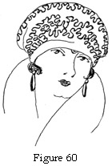

1925—Millinery
by Jane Loewen
CHAPTER X—DRAPED HATS
I. MATRONS' TURBANS
CUTTING OF MATERIALS
1. Materials. Materials used for matrons' draped hats are usually velvets, satin soleils, satins, duvetyns, heavy faille, taffeta, moire silks, ribbon, straw cloths, and some straw and hair braids.
For folded drapes velvet, duvetyn, satin soleil, moire" satin, and straw cloth are good fabrics.
Hat braid and some visca and satin-straw braids are sewed into wide strips and used for folded drapes.
For shirred, draped turbans satin soleils, faille, moire, and heavy taffetas are good fabrics. These fancy fabrics may be used for the shirred parts in combination with velvet, duvetyn, or satin braid for the fitted or unshirred part of the turban.
For shirring fabric may be straight, bias, or shaped. A pattern for the shape, or dimensions for cutting are always given on a hat pattern.
For rosette effects velvet, satin soleil, ribbon, taffeta, moire, or faille may be used. These fabrics may be combined with other fabrics or straw braid or straw cloth.
Figure 53. Making a Roll at the Headsize of the Crown for a Turban Foundation.
COMBINATION OF MATERIALS
Almost without exception a combination of materials with different finishes makes a more effective draped hat than a use of one material only. The materials may be of the same or contrasting colors. Below are listed a few good combinations for draped turbans:
- Black velvet and black satin soleil.
- Black velvet and king's-blue velvet.
- Black soleil and copenhagen-blue velvet.
- Brown soleil, brown velvet, and sand velvet.
- Brown soleil and henna velvet.
- Black satin and black hair cloth.
- Black moire, Copenhagen moire, and black hair cloth.
- King's-blue faille, black faille, and black hair cloth.
- Plum satin, navy satin, and navy hair cloth.
- Brown faille, sand faille, brown hair braid.
- Navy taffeta, rose taffeta, navy straw cloth.
- Navy velvet, navy and gold brocade.
- Brocade soleil, brocade and gold tinsel cloth.
- Copenhagen-blue velvet and blue-and-silver-tinsel cloth.
USE OF SMALL BRIMS
With very few exceptions, a small rolled or mushroom brim makes a draped turban much more becoming. Very few women past thirty years of age can stand a hard forehead line in a hat.
Figure 54. Width in a Draped Turban.
Figure 55. Fabric Turban Made of Bows Which Give Irregular Width.
Figure 56. Turban with Side Crown and Rosettes of Petals, Giving Width.
WAYS TO OBTAIN WIDTH
The placing of shirred rosettes or the side extension of shirred and folded drapes may be utilized to give soft width to a turban. This is especially necessary when the individual has high, wide cheek bones. Soft width in the hat gives better balance to the hat. Both drapes and rosettes may be held in place by wired braces.
WAYS TO OBTAIN HEIGHT
Where height is desired, rosettes and drapings may be extended above the frame crown and held in place by wired braces.
Feathers may add to the line of a drape and give further height.
Figure 57. Frame Which Gives Height to Matron's Hat. Note the high coronet F which holds up the drape. The brim A is rolled across the front and left side, line C-B. This roll to the brim and the coronet width at the sides, points S, make the perfect formula for a short woman with a full face oval.
Figure 58. The Rolled Brim and High Rosette Trim Give Height and Lifted Line.
II. HAREM TURBANS
Figure 59. Draping the Harem Turban. Points 1, 2, and 3 are folds in the bias drape. Point A shows the straight selvage edge. Point B shows the lap of the plain material under the brocade.
VARIED MATERIALS USED
1. Duvetyn makes an admirable draped turban for street wear. The pile is deep, the colors are good, and the fabric becoming because it gives soft effects.
2. Taffeta, either plain or embroidered, is an excellent fabric for a harem turban. It drapes well, comes in good costume colors, and is easily handled.
3. Satin, because of its high lustre, makes smart tailored hats. The body of good satin drapes well. Street shades are best.
4. Satin ribbon in street and dressier shades is well adapted for turbans. Because of the finished edges it is easily handled in combination with other materials.
5. Tinsel cloths make handsome harem turbans for dressy afternoon and evening wear for winter. Colors are good and the fabric well adapted for loosely folded drapes.
6. Brocades make good dress turbans for evening and formal afternoon wear. The colors and fabrics are lovely in contrast to the dark tones of fur wraps.
7. Straw cloth makes stylish turbans in combination with celophane or jet for early spring. A rhinestone pin gives a smart finish to an all-hair-cloth turban. A fabric headsize binding is usually necessary. Haircloth catches on to the hair and hair nets.
8. Maline makes smart dance turbans and turbans for summer-dress and street wear. Jet or rhinestone or fancy, colored ornaments are the usual finish. The top may be transparent or may be of fabric.
9. Braids are sewn into wide stripping and usually combined with maline or fabric. A fabric headsize binding is necessary.
CUTTING OF MATERIALS
Fabrics are ordinarily cut on the bias for draping. Usually a circular section is used for the top of a harem turban. The drape ends may be pulled in at the headsize or folded under one another. For all straw and maline drapes the latter method is better. All headsize materials should be smooth in finish. Maline and ribbons are, of course, always used on the straight.
COMBINATIONS OF MATERIALS
Combinations of material make good dressy effects. A few combinations are listed below.
- Black satin, black and silver brocade.
- Copenhagen, jade, and rust faille.
- Gold, jade, sapphire, rust, and henna maline.
- Black maline and black satin.
- Brown maline and brown satin.
- Brown maline and brown and gold tinsel cloth.
- Jade maline and jade and silver tinsel cloth.
- Copenhagen and silver brocade and Copenhagen and silver tinsel.
- Copenhagen and silver brocade and Copenhagen velvet.
- Jade velvet and Chinese embroidery.
- Black soleil and Chinese embroidery.
- Brown soleil and brown satin and Chinese embroidery.
FRAMES USED
Turban frames, pressed or made of bias elastic net, or soft crowns with headsize bindings are used for the usual harem turbans. Soft crowns with tiny brims and soft crowns with coronets and small brims make becoming variations in frame shapes.
III. DRAPED TAMS
PATTERNS
Patterns are always given for the shape of draped tams.
Figure 60. High Drape Tam with Small Headsize, Brim, and Some Width.
1. Sectional patterns always give the method of assembling the sections and for applying any design given.
Four-section, draped tams are usually made without any frame other than a soft, pressed crown. These make good flapper hats and good foundations for embroidery.
Six-section, draped hats are made without frames. They are adapted to embroidery and come in youthful and in older designs.
Eight-section tams are made sometimes on crowns, sometimes without any frame. They are usually of fabric, though ribbon and straw cloth are used occasionally.
2. Circular patterns are used for many embroidery fabrics and straw-cloth tams. Usually they are beaded, braided, or embroidered.
3. Bias tams are of velvet, taffeta, or crêpe and usually have some width added in an extra drape or bow.
TRIMMING
Almost all tam trimming is some sort of appliquéd flat design. A few quills, feathers, and pins are used.
Figure 61. Tam Which May Be Braided by Machine or Embroidered by Hand.
1. Machine embroidery has been made a fine art. In the larger cities beautiful machine embroidery is done by professional workers. These places will furnish designs or use those provided by the customers.
2. Hand embroidery can be beautifully done by the home milliner. It requires only careful work following the designs given on the patterns.
Ribbonzene comes in lovely, soft colors and is used to make entire designs and in combination with yarn, embroidery floss, tinsel threads, or chenille.
Silk embroidery threads occasionally make an entire design, but are generally used in combination with something else.
Appliqué embroidery makes beautiful effects. Patterns for this work are always given with the hat patterns.
Yarn embroidery is used on fabric and straw cloth. It is often used in combination with straw stripping, chenille, and ribbonzene.
3. Beading is an effective trimming for this type of hat.
Wooden beads often outline appliqué. They come in lovely colors and are best used in combination with tinsel, yarn, ribbonzene, or embroidery floss.
Bugle beads are used in black, silver, gold, and colors on dressy tams, usually in combination with silk floss or tinsel threads.
Nail heads are used in white, black, and colors. They are most effective when used in solid designs or in combination with bugle beads or embroidery threads.
GENERAL SUGGESTIONS
1. Points to remember for artistry in draping tams, are: Symmetry of folds. Folds should always be smooth in line, never puckered or tight. The general line of the folds should slant in the same or directly opposite directions.
Tacking of drape. The stitches used for tacking must always be hidden. They may be tie tacks or the tacking may be done from inside the crown using small stitches on the outside and long ones inside the crown.
Always use the fewest possible number of stitches to secure the drape.
Color harmony. Always be careful to choose harmonious colors for embroidery colors that blend well. Vivid colors may be used for the tam fabric and dull colors for the embroidery or the reverse. Never use vivid embroidery colors on a very vivid fabric, or dull embroidery colors on dull fabrics.
Self-tone embroidery should be used if a dull effect is desired.
2. Points to remember for becomingness. Draped tams furnish one of the most becoming types of hats. The drape may be adjusted to give becoming lines for different kinds of faces. Always try on and readjust the drape to suit the individual. This makes an excellent class problem.
Harmony of line. Becomingness depends greatly upon the degree to which lines of the hat harmonize with one's physical lines.
a. Harmony of line with facial contour. The tam must be draped so as to preserve a balanced proportion.
A small face must never have a too-heavy drape.
A long face oval needs soft width without length draping.
A wide face oval takes proportionately wide draping.
b. The mode of hairdressing has a great deal to do with the becomingness of hats. A large knot of hair in the back needs always to have some brim and some drape in the back and at the sides. A plain mode of hairdressing needs some brim and a soft drape. A soft, full mode of hairdressing can stand plainer and more severe lines in a hat.
c. Harmony with costumes. A draped hat must harmonize in style and fabric with the costume it is designed for. A draped hat may be worn for street or dress, according to the fabric used. Evening fabrics for evening wear, street fabrics for street wear is the rule.
IV. SECTION HATS
Section hats are hats which receive their form from the fitting together of shaped pieces, or sections, of material. The majority of these hats are made in pie- or wedge-shaped sections, the apex of the sections forming the top center of the crown. Two-section crowns (see Figure 31), six-section crowns (see Figure 32), and saddle-section crowns (see Figure 24) are notable exceptions.
Patterns are given for the shapes of section hats.
VARIOUS SECTIONAL HATS
1. Two-section hats usually have a crown or no frame at all; they are used for misses and children, being delightfully soft.
2. Four-section hats are made sometimes on a crown, sometimes on a crown and brim. Any embroidery or design used is always given with the pattern. See Figure 103 for section hat with crown and brim foundation.
3. Six-section hats are made with or without brim foundation. A crown or headsize band is always used. A pin, tassel, or ornament is often the only finish. The material is usually fabric. Any embroidery design is always given on the pattern.
4. Eight-section hats have the same characteristics as six-section hats (see above).
5. Saddle-section hats are very smart for both dress and street wear. Embroidery or handmade flowers are the usual trimming. Patterns are always given for any handwork.
QUESTIONS
- How are materials cut for a matron's draped turban?
- What materials are used for harem turbans ?
- Is a harem turban a dress or a street hat?
- Give some fabric combinations for matron turbans and harem turbans.
- How should a straw turban be finished at the headsize?
- What foundation is used for
- A circular tam?
- A section tam?
- An eight-section hat?
- A two-section hat ?
- How are wooden beads used to the best advantage?
- What frame has a two-section hat?
- How should a draped tam be draped for an individual?
- What is an evening draped tam?